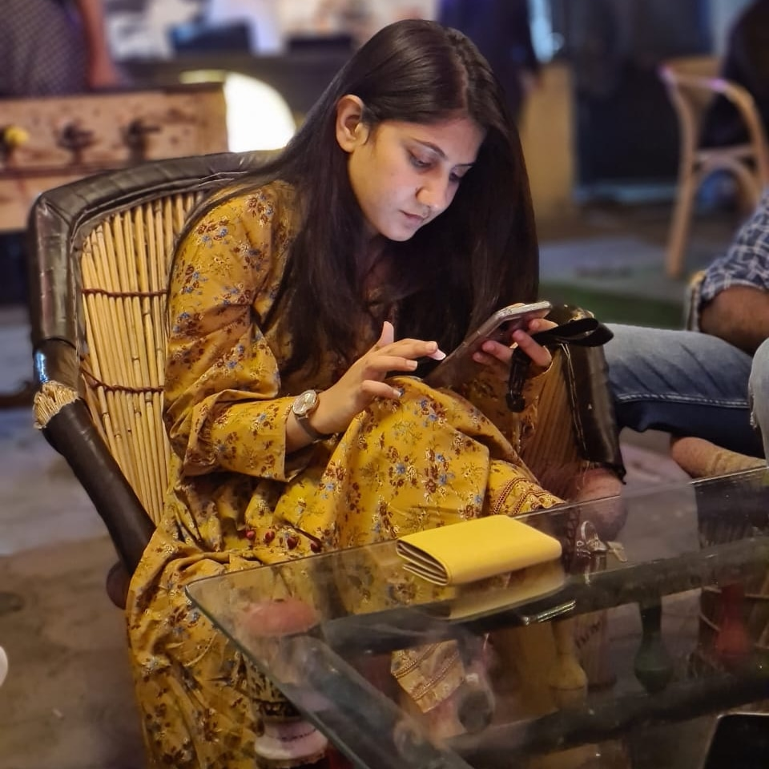

Welcome To My Personal WebsiteUm Ul Baneen ZahraMobile no:+923318423388 Email address : umulbaneenzahra1@gmail.com Personal Information
ObjectiveSeeking a challenging position to utilize my academic knowledge. Strive to improve my personal and academic skills. To get the best out of it for the good prestige of the departments well as for my own career. Qualification
Other Experiance
ReferenceReference are avalilable on request. |
|---|